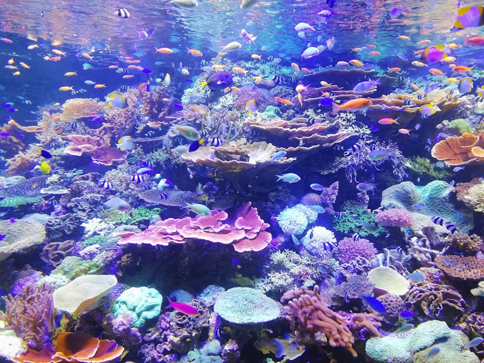
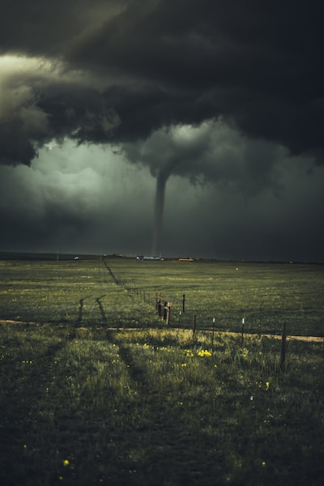

Long ago, people forgot about Allah and worshipped idols made of stone and wood.

The Story of Prophet Nuh
A Child-Friendly Tale from Islam
Allah sent Prophet Nuh to guide them back to the right path.
Nuh preached day and night, calling people to worship only Allah.
But most people laughed and mocked him, refusing to listen.

Nuh was patient and continued preaching for 950 years!
Finally, Allah told Nuh to build a huge ark, even though it was far from water.
People mocked him more, but Nuh followed Allah's command.
When the ark was ready, animals came in pairs, and the believers boarded.
Then, the skies opened, and water gushed from the earth - the great flood began.

The waters rose, and those who didn't believe drowned.
Even Nuh's son refused to board and was lost in the flood.
When the flood ended, the ark rested on a mountain, and a rainbow appeared - a new beginning for the believers.
Prophet Nuh (peace be upon him) was a kind and wise man.
He was chosen by Allah to guide his people.
He told them to stop worshipping idols.
He asked them to believe in one God only.
But most people didn’t listen to him.</div>
Prophet Nuh kept teaching for many, many years.
He never gave up, even when they laughed at him.
Only a few people believed him.
They prayed to Allah and stayed patient.
Allah loved Prophet Nuh for his patience.</div>
Then Allah told Prophet Nuh to build a big boat — an ark.
He worked day and night with his followers.
People made fun of him, saying, “There’s no rain!”
But Prophet Nuh kept building, trusting Allah.
The ark grew large and strong.</div>
When the ark was ready, Allah told him to take two of every animal.
Lions, elephants, birds, and sheep all came in pairs.
The believers also entered the ark.
Then the sky grew dark.
Rain began to pour heavily.</div>
The rain fell and fell.
Water rushed from the ground and the sky.
Soon, everything was covered in water.
Only the ark floated safely on the waves.
Prophet Nuh and the believers prayed inside.</div>
After many days, the rain stopped.
The sun came out, and the water went down.
The ark rested on a mountain called Al-Judi.
Prophet Nuh thanked Allah for saving them.
They began a new life on the clean earth.</div>
Prophet Nuh taught his people to live with kindness and faith.
He reminded them always to thank Allah.
His story teaches us to be patient and trust Allah.
Even when others don’t believe, truth always wins.
Prophet Nuh’s faith still inspires us today.</div>